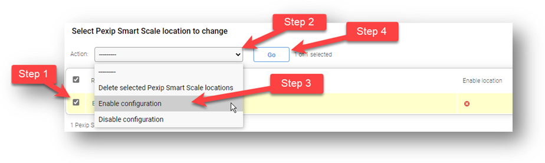

To configure PSS:
Enable PSS:
- Go to Platform --> Global Setting --> Pexip Private Cloud.
- Tick Enable Pexip Private Cloud.
- Set the Gateway URL.
- Set the Customer ID.
- Set the Authentication token.
- Save.
- Ensure the Management Node icon is green (
 ) and there are no alarms raised.
) and there are no alarms raised.
Create a System Location to contain the PSS nodes:
- Go to Platform --> Locations.
- Add a new System Location.
- Set Name.
- Set DNS and NTP Servers (remembering that external servers may not be reachable).
- Set MTU.
- Transcoding Location: This location.
- Save
Configure PSS location:
- Go to Platform --> Pexip Smart Scale
- Set Region.
- Set Max HD Calls
- Set System Location.
- Save.
Enable PSS location:
- Check the box next to the location, then in the Action drop-down, select Enable then click Go.

Configure the DMZ System location:
- Platform --> Locations, then select the DMZ location.
- Set Primary overflow location as outlined in the lab sheet.
- Set the MTU.
- Then Save.
Configure the DMZ Node:
- Platform --> Conferencing Nodes, then select the Edge node.
- In the Static routes section, click the green plus to Add another static route.
- Configure the static route, as per the details in section #14 of the lab sheet.
- Click Save to store the static route configuration.
- Click Save again to update the Conferencing Node.
Configure the LAN System location:
- Platform --> Locations, then select the LAN location.
- Set Primary overflow location as outlined in the lab sheet.
- Set the MTU.
- Then Save.
Configure the Management Node:
- Platform --> Management Nodes, then select the Management Node.
- Set the MTU.
- Then Save.